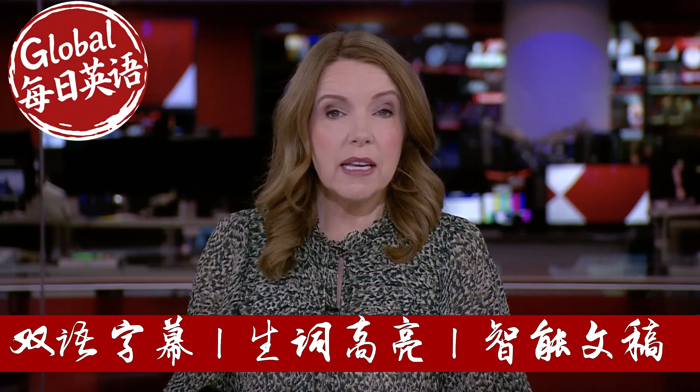

【【生词双高亮】BBC News 20250909 法国总理下台｜以色列发生恐怖袭击｜天文学家正研究距地球40光年的类地行星是否拥有大气层】
Summary: French Prime Minister François Béthou has been ousted by parliament in a no-confidence vote, becoming the second French leader to fall within nine months. The 364-194 vote reflects deep political divisions over handling France's debt crisis, with President Macron facing calls for early elections but vowing to serve until 2027. The crisis weakens France's influence in the EU amid global tensions, with Macron expected to appoint a new prime minister despite parliamentary gridlock. Meanwhile, Jerusalem suffered one of its deadliest attacks in years, leaving six dead at a bus stop, while Israel prepared to escalate operations in Gaza despite new ceasefire proposals.
摘要： 法国总理弗朗索瓦·贝胡遭议会不信任投票罢免，成为九个月内第二位下台的政府首脑。此次364票赞成、194票反对的表决结果暴露了法国在处理债务危机上的严重政治分歧。马克龙总统虽面临左右翼要求提前选举的压力，但坚持执政至2027年任满。这场政治危机不仅削弱法国在欧盟的影响力，更发生在国际局势紧张之际。马克龙预计将任命新任总理，但议会分裂使组阁困难重重。同期耶路撒冷发生近年来最严重袭击事件，六人死于公交站枪击；以色列虽面临新停火提案，仍准备加强对加沙地面行动。

⏱️ Estimated Reading Time: 37 min.
📚 四级生词 📚 六级生词 📚 雅思生词 📚 托福生词 📚 专八生词 📚 SAT生词 📚 考研生词 📚 GRE生词
Hello, I'm Anita McVeigh and this is the context on BBC News.
The Prime Minister most now, tender his resignation to the President.
A very sizable defeat, therefore, Hotsuah Behoo, whose government collapses, he becomes the second Prime Minister, brought down by a vote of confidence in the space of nine months.
The crisis of facing is actually not only a crisis about the debt or the budget.
It's really a political crisis.
Let's be honest, within that Parliament, crisis is more likely than solutions.
And coming up this hour on the context, French Prime Minister François Behoo is voted out by Parliament, tipping the eurozone's second biggest economy into a new crisis.
We will be live in Paris with full analysis.
Israel's Prime Minister vows to catch everyone who helped Palestinian gunmen, who opened fire on a bus in Jerusalem in one of the deadliest shootings in the city for years.
The London Fire Brigade is dealing with a possible hazardous materials incident at Heathrow Airport.
Terminal 4 has been evacuated.
We'll talk to a stranded passenger.
And does an Earth-sized planet 40 light years away have an atmosphere?
We'll talk live to one of the researchers looking at Trappist 1E.
But first, the French government has collapsed for the second time in nine months.
After Prime Minister François Behoo lost a vote of no confidence.
He called the vote himself, hoping he said to shock politicians into agreeing on a way to tackle the country's debt crisis.
But the National Assembly voted by 364 to 194 to remove him from office.
There's now pressure on President Macron from the far left and right of the political spectrum to call presidential elections, but he's repeatedly said he won't stand down until his term ends in 2027.
And in the last hour or so, the Lise Palace said President Macron will name a new Prime Minister in the coming days.
So where does that leave the country?
Europe's second largest economy, both domestically and on the global stage.
Well, we can cross-live to Paris and our correspondent, there Mark Loher, who's been considering those questions all day.
So Mark, it feels almost like a conveyor belt of Prime Minister's, with no solution, it seems, to the underlying crisis.
So, you know, to that question of where it leaves France domestically and in terms of its relationship with the rest of the world.
In political paralysis, Sunita, at a terrible time with wars raging on Europe's doorstep, at the Trump administration, upending the international order, and then France, one half of the Franco-German motor, which is traditionally run Europe, is looking incredibly polarised and incredibly rudalous.
Fosmabé called, tried to push through a budget cut of 44 billion euros, talking about France's ballooning budget deficit.
He tried to scrap two national holidays and freeze welfare spending.
But it was always doomed to failure because he did not have the numbers inside the Parliament building behind me to get it through.
And so he becomes, as you say, the second French Prime Minister to be voted down by Parliament in the space of nine months.
Let us take a listen to the announcement of the votes inside Parliament tonight.
Here are the results of the votes of 573 voters 595 votes for the provocation 144, against 394 against 354.
The National Assembly has not approved 394 polls, not even 34, against the Prime Minister most now, then their resignation to the President.
And he will indeed tend to his resignation tomorrow morning.
President Macron says that the release of the Parliament says that President Macron wants to name a new Prime Minister in the coming days.
But so many of the President's critics and so many French people, majority of the French people believe this is all the fault of President Macron by calling this snap parliamentary election 14 months ago, which polarise the Parliament into three groups that effectively do not talk to each other.
And will there, can there be a new Prime Minister who can actually bring together this fractured Parliament and command the confidence of its MPs?
A little earlier, I spoke to our European editor Katia Adler, who gave me a sense of the implications and ramifications of what has happened here in France on a wider international stage.
France is a huge country.
You know, it's the second largest economy in the Eurozone traditionally.
It's a big diplomatic power on the world stage as well.
So what happens here very much matters.
For example, we can see as France is distracted by its domestic woes, its voices weakening inside the European Union.
More internationally, France, like the UK promised President Trump, to massively increase defence spending.
The UK looks to France to help it provide security guarantees for Ukraine in case of peace deal with Russia.
But with this budgetary crisis, you have to ask where on earth will the money come from?
You could say new elections, but public opinion polls here show a really divided country and suggest you just have another hung Parliament, just like France has now.
So President MacKar, who's also ignoring calls for him to stand down, is likely to call for a new Prime Minister possibly this week his fifth in less than five years.
But finding someone to say we to that new job might be difficult right now, it looks like quite a poison chalice.
Kachadler, our European editor, well as we were talking about, there are these distinct groups inside the French Parliament that are very, very polarised.
And it is extremely hard to get somebody inside Parliament as a Prime Minister to bring those groups together and command the confidence of Parliament.
One of the groups that voted against François Behu is a coalition of left wing parties called the new popular front.
We can speak now here to Jean-Claude Roi, who is an MP for the Ecologist and Social Group.
One of the parties in that left wing coalition.
Thank you very much for being with us here on BBC News.
France is budget deficit and it's debt currently almost double what the EU mandates.
And yet your party, your coalition has just voted against the Prime Minister to try to who is trying to cut France's budget deficit.
What is the alternative?
Well, I don't know about the alternative right now, but the extent of the debt is not a big surprise because since President Macron has been in an office he has lost, if I may say, more than 450 billion euros in tax cuts.
So today the debt crisis is known and it's not surprised, but the problem is that for one year nobody really offered policies or a vision if you see and it was almost impossible for François Behu to get a majority for his budget.
So instead of resigning, I think he preferred to call for this confidence vote, but seriously there was absolutely no surprise.
And saying that it would be the chaos if we voted the no confidence was just a joke because as you said earlier, even in parliament or in the streets he doesn't have the confidence of people.
So what do you want to happen now?
Because the Elise et Pélete Palace says that they will not be snap elections and that President Macron will name a new Prime Minister.
Who do you want that to be?
Well first if the President Macron tries for a third time in a row to choose somebody who just relies on the national rally to the far right to avoid or to make it possible to vote the budget it won't work.
So maybe even if it's one more than one year now after the snap parliamentary election he called he might just let a chance to the new popular front to try to find a majority.
We know that we don't have an absolute majority but we know that there are 18 months to go now and we need to do something.
The people are worried when I meet people there is anger as we will see everywhere in France in two days.
And briefly Jean-Claude I mean people are worried here but people are worried on the world stages as well about a France that is seeming increasingly weak at the moment politically.
Isn't this just irresponsible politics to vote in this way with the international situation as it is at the moment?
I think it is irresponsible to pretend that there is no alternative.
There are alternatives.
They are just thought of the expenses and other of the possible income.
Wealthers people in this country are not taxed as they should and many big companies got what we could say what we could call presence over the last year.
So now maybe it's time to find new income and everybody can can see that they are told to make sacrifices to pay for the debt and they are even held responsible for it but they are not.
In fact to help the society to understand and to accept you will need to share the pay the price.
Jean-Claude Roe an MP with the Ecolitis and Social Group thank you very much indeed and so very uncertain times for France and we will find out in the coming days who present Macon will try for a third time to get a budget through Parliament.
Many of his critics calling for him to resign.
He says he will do no such thing and he will see out the rest of his term till 2027.
For the moment back to you Anita in London.
Mark thank you very much Mark Lohan reporting.
Now to the breaking news from the last hour or so the London fire brigade says it is responding to a possible hazardous materials incident at Heathrow Airport.
A Heathrow spokesperson says terminal 4 check-in has been closed and evacuated while emergency services respond to an incident.
The statement goes on we are asking passengers not to travel to terminal 4 and supporting those on site all other terminals are operating as normal.
They say they'll provide further information as soon as they can.
Well let's cross-live to Heathrow and our news correspondent Ellie Price who joins me on the phone now having just arrived there a short while ago.
Ellie what's the latest?
Well Anita I can tell you actually now that terminal 4 has now officially reopened.
I'm actually on the bus traveling from terminal 5 it's being a bit of a nightmare to get to and along with a load of other passengers who are looking rather worried that they might be about to miss their flight.
So the terminal was closed for a second hour or so.
I asked the report of an incident there the police were called the fire engines.
The fire brigade were called to what possible hazardous materials incident there.
Specialist proved were deployed to carry out an assessment we're told that is recording to the London fire brigade and terminal 4 check-in was evacuated as a precaution while fire fighters conducted operations.
Now around 20 people have been assessed on scene by paramedics from the London ambulance service but we're told that no one has been seriously injured and no arrest has so far been made.
So do we know the precise cause of this yet?
All very unclear I'm afraid at the moment and he says to say all looking rather good news I feel safe as a tough to do the round we're here looking very concerned about whether they're going to miss their flight but no some people we were told were taken ill but no one is in a life threatening condition up supporting to the Metropolitan Police as I say it's all been kind of difficult to say exactly what's going on.
I'm afraid to tell you I'm not actually right on route now so I'll be able to give you an update in a few minutes when I'm there in terms of exactly what's happening but we're told the terminal has reopened we understand that most of the flights in and out of the terminal actually have been leaving on time and that we haven't seen any major delays or cancellations as yet and as I say it is we're told now being stood down as an incident.
Okay Ellie thank you very much for that Ellie Price who is doing her best to get terminal four at Heathrow as she was just explaining we have now actually just had a full statement from Heathrow Airport let me bring that to you after it was announced that terminal four would be reopening they're saying emergency services have confirmed terminal four is safe to reopen we are doing everything we can to ensure all flights to depart as planned today.
The statement goes on we are very sorry for the disruption calls the safety and security of our passengers and colleagues is our number one priority we encourage passengers to check with their airline for the latest information about their flight this evening and our colleagues will be on hand into the night to assist.
Any more details of course we will get them to you right now a short break around the world and across the UK this is BBC News.
At least six people have been killed in one of the deadliest attacks in Jerusalem in recent years.
Gunmen opened fire at a bus stop during rush hour.
Commuters began to flee when shots rang out at a busy junction in the northern outskirts of the city.
Security officials say the attackers who were killed by a soldier and an armed civilian were from the occupied west bank.
Hamas has praised the attack but has not said it was responsible for the shootings.
Lucy Williamson reports.
From the dashboard camera of a nearby car the sound of Israel's fragile security shattered.
Morning commuters sprayed with bullets as they surge in panic down the road.
A taxi driver, dazed in the chaos helps his passenger out.
A bullet whizzes inches from his head.
Hitting the vehicle behind him.
Among the six people killed this morning were two rabbis and a newly married man.
Emergency teams found the dead and wounded scattered on the ground.
They found the bodies of the two gunmen shot dead by armed bystanders.
Daniel Katzenstein said one of the injured he treated on arrival was a bus driver called Muhammad.
He also ran to help.
This is not a battle of Islam versus Judaism.
This is a battle between the people who wish to do harm and the people who want to live life.
Israel's prime minister Benjamin Netanyahu said security forces were searching the occupied west bank for accomplices.
I would like to state as clearly as possible.
These murders and attacks in all sectors will not weaken us.
They will only increase our determination to complete the mission we've taken upon ourselves.
This mission is in Gaza, Judea and Samaria and everywhere.
Benjamin Netanyahu has made Israel's security the main justification for continuing the war in Gaza.
He also uses it to justify expanding Israel's military occupation of the west bank.
His supporters will see this as proof he needs to go further.
His critics will ask whether his actions are keeping Israel safe at all.
Hamas expressed support for today's attack, describing it as a natural response to the crimes of the occupation
and the genocide Israel was waging.
The Palestinian Authority quickly condemned the shooting of civilians.
On a hill above the attack site, 18-year-old Piny from Tottenham in London was watching the scene.
He was with his Yashiva teacher, Pincas.
It's a bus that a lot of us take a regular basis.
It goes central to Jerusalem, shall I?
Yes, very upsetting.
It's something that we used to it.
We know that in a couple of hours the world is going to forget about this.
They will be shouting on us why we are doing stuff to keep us safe.
This is in Gaza or Lebanon or in all different places.
50 miles south, Israeli forces are preparing to conquer Gaza City.
Gaza's hospitals report another 40 people killed.
This war has demolished Gaza and changed the Middle East.
But it left the conflict between Israelis and Palestinians intact.
Lucy Williamson, BBC News, Jerusalem.
Israel's Prime Minister Benjamin Netanyahu has told residents of Gaza City to evacuate.
He said troops were being assembled to enter the Palestinian territories main urban center.
The order came hours after another tower in the city was destroyed by Israeli strikes.
This was a 12-story block known as the Al-Royah II building in the center of Gaza City.
An evacuation warning to those inside and intense in the surrounding area came ahead of the strikes.
In a video statement, Mr Netanyahu said, I say to the residents, you have been warned, leave now.
He went on to say, all of this is a prelude.
It is just the opening to the main intensified operation.
This is the ground maneuver of our forces.
They are now organizing and assembling to enter Gaza City.
Meanwhile, Israel's Foreign Minister Gideon Saar says Israel has accepted a Gaza ceasefire proposal.
The proposal is from President Trump.
On truth, social, Mr Trump issued what he called a last warning to Hamas.
He warned them to accept a deal to free the Israeli hostages.
For its past, Hamas says it's ready to sit
At the negotiating table at once.
So what exactly is the ceasefire proposal from the Trump Administration?
A senior Palestinian official familiar with ceasefire efforts told the BBC under condition of anonymity the following.
that the framework provides for a 60-day Gaza.
With all Israeli hostages to be released within the first 48 hours.
the proposal provides for the simultaneous release of Palestinian prisoners.
including those serving life sentences and lengthy terms.
The plans would lead to the open flow of humanitarian aid into Gaza from the start of the agreement.
and the efforts include a personal guarantee from President Trump that negotiate in good faith towards a permanent ceasefire.
Meanwhile, the Palestinian President Mahmoud Abbas is in London this evening meeting Prime Minister Sir Keir Starmer in Downing Street.
and let me just warn you.
there are flashing images in these pictures of his arrival a short time ago.
Mr Abbas arrived in the UK last night for a three-day visit.
His officials say he plans to use his talks with the Prime Minister to push for an end to what they said is the aggression.
destruction and starvation being inflicted on the Palestinian people.
It comes as the UK government continues steps towards recognizing a Palestinian state at the UN General Assembly.
Well, joining us now is Alistair Burk.
former Conservative MP and Minister for the Middle East.
Alistair Burk, thank you very much for joining us on the program today.
And how significant do you think these discussions will be between Sir Keir and Mr Abbas in terms of the UK Prime Minister's thinking on what to do about possible recognition of a Palestinian state?
I think it's a significant visit.
I don't think there'll be any change in the United Kingdom's attitude on recognition.
It was set to recognize a state of Palestine depending on certain conditions being met by the state of Israel.
and those conditions were never likely to be met.
But the discussion will be.
well.
what happens next?
And I think as well as thinking about that.
the immediate concentration will be on trying to find a way for the warring cars that comes to an end.
get aid in.
get hostages released.
And of course the dreadful background of the atrocity today in Jerusalem will just emphasise to both President Abbas and the Prime Minister how crucial it is to bring an end to this.
and how difficult it's going to be.
But I think the focus will be as much Gaza as on the recognition of a Palestinian state.
And the Israeli President, Isaac Hotsog is also in the UK this week.
but no official word on a meeting between him and the Prime Minister.
Do you think that should happen?
I hope he does.
Because it's impossible to see a visit by Prime Minister Netanyahu to the United Kingdom at any stage in the near future.
It is important that the Prime Minister.
the United Kingdom.
speaks to all who can have an impact on what is happening in Israel and Palestine and in the Middle East.
Now President Hotsog will know that he will face significant criticism for the reprisals that Israel has inflicted in Gaza on the back of the appalling attacks on October 7th.
And it's an opportunity for the Prime Minister to talk to him about how this is brought to an end.
and what comes next.
And it's absolutely vital that the United Kingdom does this.
It is able to take a position.
It's on the Security Council at the UN.
It still has influence.
It has a strong relationship with the United States.
A conversation with President Hotsog will be important for the Prime Minister.
I'm absolutely sure of that.
Briefly, why do you think that hasn't been officially confirmed yet?
What do you read into that?
I don't know.
Of course, there's all sorts of concerns being expressed by MPs and all that.
I don't know why they wouldn't announce it.
Maybe they want to keep it quiet for a while.
I would hope it doesn't reflect a degree of pressure that the Prime Minister feels he has to succumb to.
It's really important that heads of governments see each other.
And in this case.
ahead of state meeting.
ahead of government in the Prime Minister.
it's really important that those talks continue.
Because if you're not talking to people.
how on earth are you going to get an answer to all this?
And we just have less than a minute left on the interview.
I wonder what you make of this latest ceasefire proposal from the Trump administration and the prospects for it.
Most people know that there's been possibilities of a ceasefire for some time.
Hamas's original position was to demand a ceasefire, the release of the hostages and return for Israel completely leaving the situation and bringing the conflict to an end.
If it's moved from that position to a more negotiable position, that provides an opportunity.
I think the fear that many people have had is that for some on both sides, it has suited them to keep the conflict in Gaza going.
That must end in order to ensure that the people of Gaza have a new future.
The conflict stops, the hostages are released and we start to see an end to this.
So any ceasefire proposal is an opportunity for those negotiations to succeed and bring an end to this catastrophe.
Okay, Elisabeth, grateful for your time.
Thank you very much.
Former conservative MP and Minister for the Middle East.
Do stay with us here on BBC News.